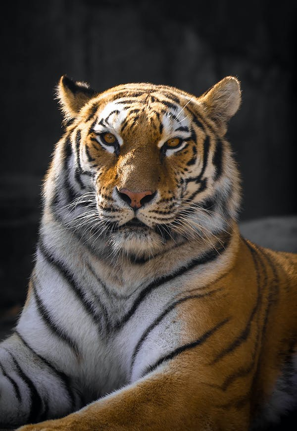
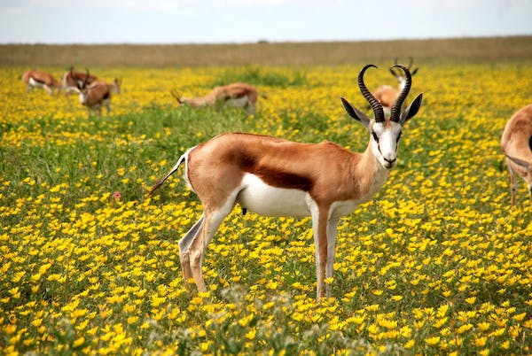

My Fave of Faves. Man's best friend. I'm not a good enough writer to do these guys justice. So I'll just say that they are very good boys/girls!!!
Looks strong, courageous and very very cool. Would not want to meet one in real life for obvious reasons.

What can I say? Cute animal that makes even cuter noises. My favorite ones are from London. Surprisingly friendly creatures.
I'm not going to lie to you. The only reason I like this animal is because I'm South African. Patriotism is weird like that.
For further information on each animal, please click on the links in the header.